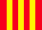

A Formula-1 szabályai
A Formula-1 szabályait az 1904-ben alakult FIA, közelebbről annak egyik alszervezete, a World Motor Sport Council határozza meg. Az első formulát 1946-ban egyeztették. Eleinte csupán a hengerűrtartalom képezte szabályozás tárgyát: az első világbajnokságot legfeljebb 1,5 literes kompresszoros, vagy 4,5 literes atmoszferikus motorral hajtott autók számára írták ki, nem volt korlátozás sem a tömeg, sem a leadott teljesítmény tekintetében. Mára a szabályok kiterjedtek az autó felépítésének minden részletére, meghatározzák a versenyek lebonyolításának menetét és szabályozzák a teszteléseket. A lehetséges szankciók széles skálán mozognak, a szabályok megsértéséért kiszabhatnak pénzbüntetést, pontlevonást, súlyos esetben versenyző és csapat ellen is alkalmazhatnak kizárást. A Formula-1 története során, a technikai fejlődés előrehaladtával számos szabályalkalmazási vitára került sor. Az 1968-ban megjelent légterelő elemek biztonságosságáról és ezáltal létjogosultságáról sokáig megoszlottak a vélemények, 1982-ben például első terelőszárnyak nélkül kellett megépíteni az autókat. 1998-ban a McLaren új fékrendszerét nyilvánították utólag szabályellenesnek, mert a kanyarokban a belső kerekeket jobban fékezte, ami kimeríti a tiltott négykerék-kormányzás fogalmát. Versenyzőt utoljára 1997-ben zártak ki a teljes világbajnokságból, Michael Schumachert, sportszerűtlen vezetés miatt. A McLaren csapatot a 2007-es világbajnokságból diszkvalifikálták, miután kiderült, hogy jogosulatlanul használt fel a Ferrari tulajdonát képező adatokat.
Technikai szabályok
A modern Formula-1-es autók hátsókerékhajtásúak, nyitott pilótafülkével rendelkeznek, együlésesek, a motort a versenyző mögött helyezik el. A karosszériák nagyrészt szénszálas anyagokból épülnek fel, amelyek könnyűek és erősek. Minden konstrukción kötelező töréstesztet végezni, csak ezután kaphat engedélyt a versenyzésre. Egy autó tömegének a motorral, a különböző folyadékokkal és a versenyzővel együtt minimum 691 kilogrammnak kell lennie. Az autók akár 370 km/h körüli sebességgel is haladhatnak, elsősorban a gyors pályákon, például Monzában. A Formula-1-es autóval valaha elért legnagyobb sebesség rekordját a Honda tartja, 417 km/h-val, amit a Mojave-sivatagban, 2005-ben értek el, minimális leszorító erő mellett. A nagysebességű kanyarokban a versenyzőkre 5 g erő is hathat, szemben például egy utcai sportautóéval, melynél ez az érték legfeljebb 1 g körül mozoghat. 5 g erőnél a versenyző testét súlyának ötszöröse húzza az adott irányba.
Egy 2005-ös Formula-1-es autó gyorsulása (Renault R25, V10-es motorral):
-
0 → 100 km/h: 1,9 másodperc,
-
0 → 200 km/h: 3,9 másodperc,
-
0 → 300 km/h: 8,4 másodperc (optimális beállítással).
Egy Mai Formula-1-es autó gyorsulása (2016 Mercedes W07, V6-os motorral)
-
0 → 100 km/h : 2,4 másodperc,
-
0 → 200 km/h : 4,4 másodperc,
-
0 → 300 km/h : 8,4 másodperc
Versenyszabályok
Szabadedzések, időmérő edzés
Minden nagydíj pénteken, két szabadedzéssel kezdődik. 2007 óta mindkét szabadedzés 90 percig tart. (Az egyetlen kivétel a monacói nagydíj, ahol hagyományosan csütörtökön tartják a szabadedzéseket, pénteken szünnap van.) Az első szabadedzésen lehetőség van tesztpilóták részvételére is, de 2007 óta ez csak úgy lehetséges, ha a két versenyző valamelyike helyett ül autóba. Szombaton, a harmadik szabadedzés után van az időmérő edzés. Az időmérő edzésen a vasárnapi verseny rajthelyeit döntik el, a versenyzők leggyorsabb köre alapján. Az edzés szabályai 2003 óta folyamatosan változtak. A jelenlegi rendszer 2006 óta van érvényben. Utoljára 2010-ben módosították, az új csapatok beszállása miatt. Az egyórás időmérő három, egyenként 20, 15 és 10 perces szakaszra oszlik. Az első részben minden, a versenyre nevezett autó a pályára futhat, majd a szakasz végeztével a hét legrosszabb időeredményt elérő versenyző kiesik. 5 perces szünet után egy, az előbbihez hasonló rész következik, szintén hét kiesővel. Az utolsó szakasznak így már csak tíz autó vághat neki. Korábban a harmadik szakasz résztvevőinek autóját már a versenyre szánt üzemanyag-mennyiséggel kellett megtankolni, de ezt a szabályt 2010-ben eltörölték. 2011-ben visszahozták a 107%-os szabályt: aki az időmérő edzés első szakaszában a legjobb idő 107%-ánál rosszabb eredményt teljesít, nem vehet részt a versenyen. Kivételt tehetnek vele, ha korábban a szabadedzésen sikerült megfelelő időt futnia és az időmérőn valamilyen körülmény hátráltatta
A verseny lebonyolítása
A verseny általában helyi idő szerint 14.00 órakor, a felvezető körrel kezdődik meg, melynek végén a pilóták elfoglalják az időmérőn elért rajtpozíciójukat. Jó ellenpélda azonban erre a 2008-as szingapúri nagydíj, melyet a nagy időeltolódás miatt este 20.00 órakor kezdtek meg. A rajt előtt öt perccel be kell fejezni az autók beállítását, a csapatok embereinek el kell hagyniuk a rajtrácsot. A zöld lámpák kigyulladása után a mezőny tesz egy felvezető kört, amelynek során tilos előzni. Ha egy versenyző ennek során kicsúszik vagy az autó problémája miatt késve tud indulni, csak akkor foglalhatja vissza a helyét a rajtrácson, ha még nem haladt el mellette a teljes mezőny. A kör végén a versenyzők visszaállnak a rajtrácsra. A start előtt egymás után felgyullad öt piros lámpa, majd mikor ezek egyszerre kialszanak, a mezőny elrajtolhat. Kivételes esetben (például nagy eső miatt) a versenyigazgatóság elrendelhet repülőrajtot, ilyenkor a mezőny felvezető kör nélkül, a biztonsági autó vezetésével rajtol el.A futam alatt a versenyzőknek legalább egyszer ki kell állniuk a boxba. Itt gumit cserélhetnek és kisebb javításokat is végezhetnek az autón. A jelenlegi szabályozás szerint a futam során a kétféle gumikeverék mindegyikét használnia kell a versenyzőnek legalább egyszer (kivételt képeznek az idő előtt leállított és az esős versenyek). 2010 óta a verseny közbeni tankolás tilos. A csapatok az előző évi konstruktőr-vb sorrendjében helyezkednek el a bokszutcában. A rajtszámoktól eltérően azonban itt nem emelik ki az egyéni címvédő csapatát. Fontos a jó időpont megválasztása a boxkiállásra, ami kihathat a végeredményre is.
Zászlószabályok
| Zászló | Jelentése |
|---|---|
 |
A szabadedzésnek, az időmérő edzésnek, vagy a versenynek vége van. |
 |
A verseny, a szabadedzés, vagy az időmérő edzés félbeszakad. |
| Figyelmezteti a lassabb versenyzőt, hogy engedje el az őt lekörözni készülőt. Ha a pilóta háromszor nem veszi figyelembe figyelmeztetést, bokszutca-áthajtásos büntetést kap. A bokszutca kijáratában lengetve: forgalom van a pályaszakaszon, kihajtásnál legyen óvatos a versenyző. | |
 |
Tilos az előzés, a pályán lévő valamilyen akadály miatt. Duplán lengetve fokozott veszélyre figyelmeztet. Ha a sárga zászló mellett az VSC vagy SC táblát is mutatjhatják. Ha az SC-t mutatják akkor bejön a biztonsági autó is. |
 |
Ismét szabad előzni. |
| Vigyázat! A pályán lassú jármű halad. | |
|  | Csúszós a pálya (olaj, eső). A zászlót 3 körön át lengetik. |
| Egy versenyzőt figyelmeztetnek, hogy technikai problémája van és a következő körben ki kell mennie a boxba. A zászló a hibás autó rajtszámát is jelzi. | |
| Egy versenyzőt a sportszerűtlen magatartásáért egyszeri alkalommal figyelmeztetnek. Ezen a zászlón is szerepel az érintett autó rajtszáma. | |
 |
Egy autót kizárnak a versenyből és haladéktalanul ki kell állnia a boxba. A zászlón szerepel az érintett rajtszáma. |
Alkalmazható büntetések:
- Bokszutcán való áthajtás (drive through penalty) : a versenyzőnek úgy kell áthaladnia a bokszutcán, hogy közben nem állhat ki a csapat bokszába. A büntetést a 2010-es szezontól a kiszabás után két körrel le kell tölteni.
- A Stop-and-go penalty az előbbi büntetés annyival súlyosbítva, hogy a csapat bokszában a versenyzőnek 10 másodpercig meg kell állnia, a csapat szerelői nem nyúlhatnak az autóhoz.
- Időbüntetés: A bokszutcai büntetések enyhébb formája. Van öt és tíz másodperces változata is. Ha futam közben szabják ki, a versenyző legközelebbi bokszkiállásakor a csapat embereinek a büntetés időtartamát meg kell várniuk, mielőtt hozzányúlnának az autóhoz. Ha a versenyzőnek már nincs több bokszkiállása vagy ha a leintés után állapítják meg a szabálytalanságot, a büntetés idejét utólag hozzáadják a versenyidejéhez. Súlyosabb időbüntetést szabnak ki, ha a pilóta a verseny vége felé követ el olyan szabálytalanságot, amiért áthajtásos vagy kiállásos büntetés járna, illetve ha utólag állapítják meg a szabálytalanságot. Ha áthajtásos büntetés járna, a 2010-es szezontól 20 másodpercet adnak a versenyző idejéhez, ha 10 másodperces stop-and-go járna, akkor 30 másodpercet.
- Futam közbeni kizárás: fekete zászlóval jelzik, ilyenkor versenyzőnek haladéktalanul ki kell állnia a bokszba, és jelentkeznie kell a versenyigazgatóságnál.
- Utólagos kizárás: a versenyzőt megfosztják helyezésétől, illetve az azért járó pontjaitól. Ilyenkor a mögötte végzők általában előbbre lépnek, bár volt példa ez alól kivételre is.
- Pénzbüntetés (többnyire edzéseken történő bokszutcai gyorshajtásért szabják ki).
- Hátrasorolás a rajtrácson (váltócsere öt, motorcsere tízhelyes hátrasorolást von maga után, de veszélyes manőver miatt is kiszabható). 2014-től kezdve ha a versenyző olyan eredményt ér el az edzésen, hogy csak kevesebb hellyel sorolható hátra, a maradékot át kell vinnie a következő futamra.
- Edzésidő törlése: enyhébb esetben a versenyzőnek a többi köridői közül a legjobbat veszik figyelembe; súlyosabb esetben az összes edzésidőt törlik, a versenyzőnek a rajtrács végéről kell indulnia.
- Megrovás: ha egy versenyző hármat összegyűjt az idény során, a következő futamon tíz rajthellyel hátrasorolják.
- Büntetőpont: 12 büntetőpont összegyűjtése egy futam eltiltást von maga után.
- Konstruktőri pontok levonása: csak a versenyző kapja meg a helyezésért járó pontokat. Akkor alkalmazzák, ha úgy látják, hogy technikai szabálytalanság miatt a felelősség nem terheli a versenyzőt. Erősen vitatott eljárás, miután a csapat és a versenyző szereplése nem választható külön. Ilyen büntetést kapott 1995-ben a brazil nagydíjon a Williams és a Benetton, a 2000-es osztrák nagydíjon a McLaren (csak az 1-es számú autójára, Mika Häkkinenre), illetve ugyancsak a McLaren 2007-ben előbb a magyar nagydíjon (a versenyzők közti incidens miatt az időmérőn), majd később az egész évadra (a kémbotrány miatt). 2018-ban a magyar nagydíj után a csődbe ment Force India konstruktőri pontjait vették el, a helyébe lépő Racing Point Force Indiának nulla pontról kellett indulnia a belga nagydíjtól.
- Eltiltás: ilyen büntetést kapott 1989-ben Nigel Mansell egy futamra (fekete zászló figyelmen kívül hagyásáért), 1994-ben Eddie Irvine három, Mika Häkkinen (mindketten baleset okozásáért) egy, Michael Schumacher két futamra (fekete zászló figyelmen kívül hagyásáért), 2005-ben a BAR csapat két futamra (az autó súlyával való trükközésért), 2012-ben Romain Grosjean egy futamra (baleset okozásáért).
- Világbajnoki helyezéstől való megfosztás: 1997-ben Michael Schumachert büntették így, mivel a zárófutamon szándékosan hajtott neki Jacques Villeneuve autójának. Versenyeredményeit azonban megtarthatta, azok beleszámítanak a statisztikáiba. 2007-ben a McLaren csapatot zárták ki a pontversenyből a Ferrari elleni kémkedésért (a versenyzők a pontjaikat megtarthatták).
Itt láthatóak az alábbi elérhetőségeink a többi platformon
Minket kövessenek ne az álmaikat!